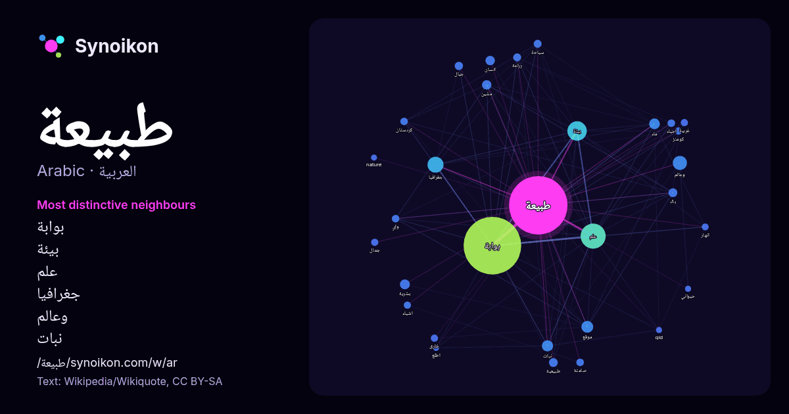

العربية · كلمة شائعة
طبيعة
“nature” · الكلمات الموجودة حولها في 653 ورودًا من ويكيبيديا, Wikiquote.

الجيران الأكثر تميّزًا
- بوابة 535×
- بيئة 43×
- علم 41×
- جغرافيا 40×
- وعالم 35×
- نبات 19×
- مشين 18×
- باك 15×
- بشرية 13×
- ماء 12×
- صامتة 12×
- كردستان 11×
- كومنز 11×
- خارق 11×
- سياحة 11×
- موقع 11×
- واي 9.9×
- غريبة 9.8×
- طبيعية 9.1×
- جبال 8.6×
× = كم مرة أكثر مما في نصوص ويكيبيديا العامة.
الجيران الأكثر تكرارًا
- بوابة 633
- علم 120
- بيئة 72
- جغرافيا 49
- وعالم 38
- عالم 32
- موقع 27
- نبات 24
- ماء 22
- بشرية 19
- متحدة 19
- انسان 17
- مشين 17
- علوم 16
- باك 15
- طبيعية 15
- جبال 13
- منطقة 13
- جزر 12
- حياة 12
في السياق
- موقع واي باك مشين> طبيعة في المشاريع الشقيقة وسائط من كومنز اقتباسات من ويكي الاقتباس بوابة أشجار بوابة المجموعة الشمسية بوابة طبيعة بوابة طقس بوابة علم Wikipedia snippets · طبيعة
- (الإنجليزية) طبيعة غريبة على موقع روتن توميتوز (الإنجليزية) طبيعة غريبة على موقع أول موفي (الإنجليزية) طبيعة غريبة على موقع فلمافينيتي (الإسبانية) طبيعة غريبة Wikipedia snippets · طبيعة غريبة (فلم)
- طبيعة الحال (الفرنسية: En Attendant les hirondelles) فيلم درامي فرنسي من إنتاج عام 2017، من إخراج المخرد الجزائري كريم موساوي. عُرض الفيلم في قسم "نظرة Wikipedia snippets · طبيعة الحال (فلم 2017)
- طبيعة المكان والزمان (الإنجليزية: The Nature of Space and Time) هو كتاب يوثق مناظرة حول الفيزياء والفلسفة دارت بين عالمي الفيزياء النظرية البريطانيين Wikipedia snippets · طبيعة المكان والزمان
- أنا عالم طبيعة الشعار تعديل - تعديل مصدري - تعديل ويكي بيانات أنا عالم طبيعة هو موقع ويب من نوع قاعدة بيانات تصنيفية وقاعدة بيانات على النت ومشروع علمي Wikipedia snippets · أنا عالم طبيعة
- طبيعة الحب أو قانون الطبيعة (التركية: Doğanın Kanunu) هو مسلسل تركي من نوع الدراما والكوميديا الرومانسية، من إنتاج القمر للإنتاج. بدأ عرضه في 10 يونيو Wikipedia snippets · طبيعة الحب (مسلسل)
- سميث (الإنجليزية: Herbert Huntingdon Smith) (و. 1851 – 1919 م) هو عالم طبيعة، وعالم حيواني، وعالم حشرات، وعالم نبات، ومستكشف أمريكي، توفي عن عمر يناهز Wikipedia snippets · هربرت سميث (عالم طبيعة)
- علم طبيعة المسيح أو الكرستولوجيا (الإنجليزية: Christology) هي مجال دراسة ضمن اللاهوت المسيحي مهتم بدراسة طبيعة يسوع، وخاصة كيفية ارتباط الألوهية والإنسانية Wikipedia snippets · علم طبيعة المسيح
كلمات أخرى
- أغنية
- إله
- تاريخ
- جبل
- جرس
- جزيرة
- جسر
- حديقة
- حصان
- حقيقة
- حياة
- خبز
- خريطة
- خريف
- ذهب
- زمن
- ساعة
- شاي
- شتاء
- صحة
- صحراء
- صمت
- صيف
- طريق
- طعام
- ظل
- عائلة
- عاصفة
- عسل
- علم
- عمل
- غابة
- فن
- قطار
- قطة
- قلب
- قوة
- كلب
- لغة
- ماء
- مال
- مدينة
- مرآة
- مطر
- ملح
- مناخ
- موت
- نجم
- والدة
حُسبت مسبقًا في 2026-10-09 بالإعدادات الافتراضية (±5 كلمات، مدوّنة متوسطة). يمكن للخريطة التفاعلية تحديثها ببيانات حية.
واجهة مترجمة آليًا؛ نرحب بالتصحيحات.